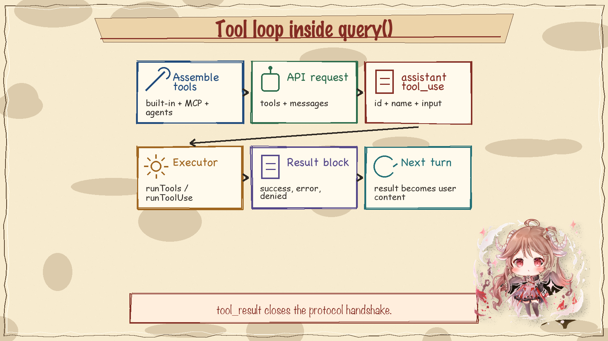
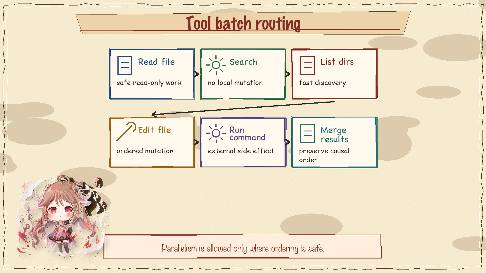
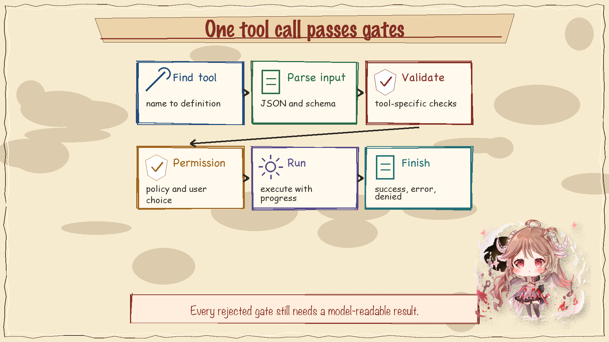
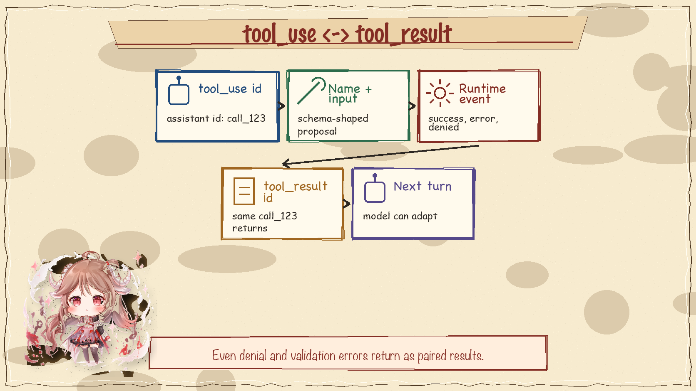

The Anthropic API exposes tool use as message blocks: the assistant emits tool_use, the client runs something, and the next user message returns tool_result. Claude Code adds the runtime machinery that makes this contract safe enough for a coding agent.
1. The model sees tool schemas, not local functions
Before a turn reaches the provider, the runtime assembles the available tools and converts them into request parameters. That list can include built-in tools, MCP tools, and agent tools. The model receives names, descriptions, and schemas. It does not receive arbitrary access to local JavaScript functions.

2. ToolUseContext is the bridge
ToolUseContext carries the state needed after the model chooses a tool: command tables, tool lists, MCP clients, agent definitions, permission context, messages, replacement state, and the rendered system prompt. That bundle is why a tool can make decisions using the current session rather than acting like an isolated callback.
3. Tool calls are scheduled
runTools() groups calls according to whether they can run safely in parallel. Read-only operations can often be concurrent; side-effecting operations need ordering. The distinction is about correctness first and speed second. A coding agent that edits files and runs shell commands must not reorder effects casually.

4. One tool call passes several gates
runToolUse() handles unknown tools, aborts, validation, permission wrapping, progress updates, and final result packaging. The internal call path is longer than a function invocation because every local action must be explainable back to the model and the user.

5. Result pairing protects the loop
The provider protocol expects every returned tool result to match a previous tool-use id. Claude Code preserves that pairing while converting local success, denial, validation error, interruption, and execution failure into model-readable blocks. This is how the loop continues without pretending that every tool call succeeded.

6. The invariant
The model can ask; the runtime must decide. That sentence explains most tool code in Claude Code. If a path changes tool schemas, execution ordering, permission checks, or result pairing, it changes the contract between the model and the local machine.
Sources
The source-code claims in this article are based on the public mirror and the linked official documentation. Server-side behavior and private feature-gate policy are treated only as client-visible request shape.